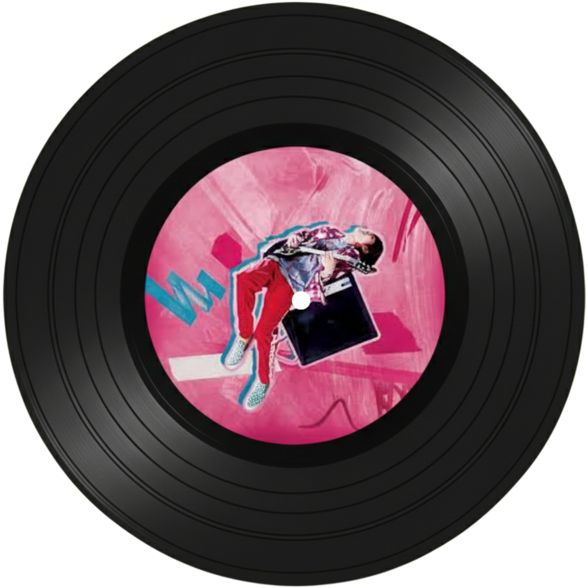

이승윤

이승윤
오디션 프로그램 <싱어게인>에서 "장르가 30호"라고 불리며 자신만의 장르를 확고히 알리며 우승하게 된 이승윤은 비록 록 가수라고 명확히 구분하기에는 워낙 음악 스타일이 한 장르에 국한되지 않고 자신만의 색깔이 뚜렷한 아티스트이지만, 굳이 구분하자면 록에 가까운 아티스트이기 때문에 소개하게 되었다.

들려주고 싶었던
<싱어게인>에서 최종 우승한 후 2021년 2월에 발매한 싱글 곡으로, 라이브 무대에서 관객들과 호흡하며 무대를 즐기는 모습이 인상적인 곡이다. 오랜 무명 생활을
끝내고 발매한 곡인 만큼 가사에 자신의 팬들을 향한 애정을 담아냈으며, 특별히 이 곡은 팬들이 불러줘야 하는 부분이 있기 때문에 음원보다는 라이브로 듣는 것을 추천한다.
게인주의
<싱어게인>에서 TOP 10에 들며 자신의 이름을 밝히는 명명식에서 부르면서 자신을 드러냈던 노래이다. 제목을 "개인주의"의 유사 발음인 "게인주의"로 했는데,
음악에서 사용하는 음폭을 의미하는 게인이 폭발한다는 의미를 담고 있다. 하드 록/모던 록이 결합된 사운드에서 자유롭게 자신을 드러내는 이승윤의 모습을 볼 수 있으며,
라이브에서는 정말 이승윤답게 노는 모습을 볼 수 있다.
캐논
캐논이라는 음악 코드 형식에 대한 이승윤의 애정이 담긴 곡이다. 가사 내용의 경우 "너"와 "나" 사이의 애정에 대해 이야기하고 있으며, 개인적으로 "지우지 않을 후회를
줄게 그래 넌 나의 캐논이야"라는 가사를 통해 캐논이라는 코드를 이승윤이 얼마나 좋아하는지를 느낄 수 있어 마음에 들어한다. 전체적으로 따스하면서도 웅장한 분위기가 인상적인
곡이다.
언덕나무
드라마 <그 해 우리는>에 삽입된 ost이며, 평소에 팝과 록이 결합된 듯한, 페스티벌에서나 부를 법한 팡팡 튀고 신나는 곡들을 불러왔던 이승윤만을 보았다면 이런
잔잔하고 애틋한 노래도 잘 부르는 이승윤을 보길 바란다. 전체적으로 발라드 곡들과 비교하더라도 더 느리고 잔잔하게 다가오는 이승윤의 따스한 목소리를 충분히 느낄 수 있는
곡이다.